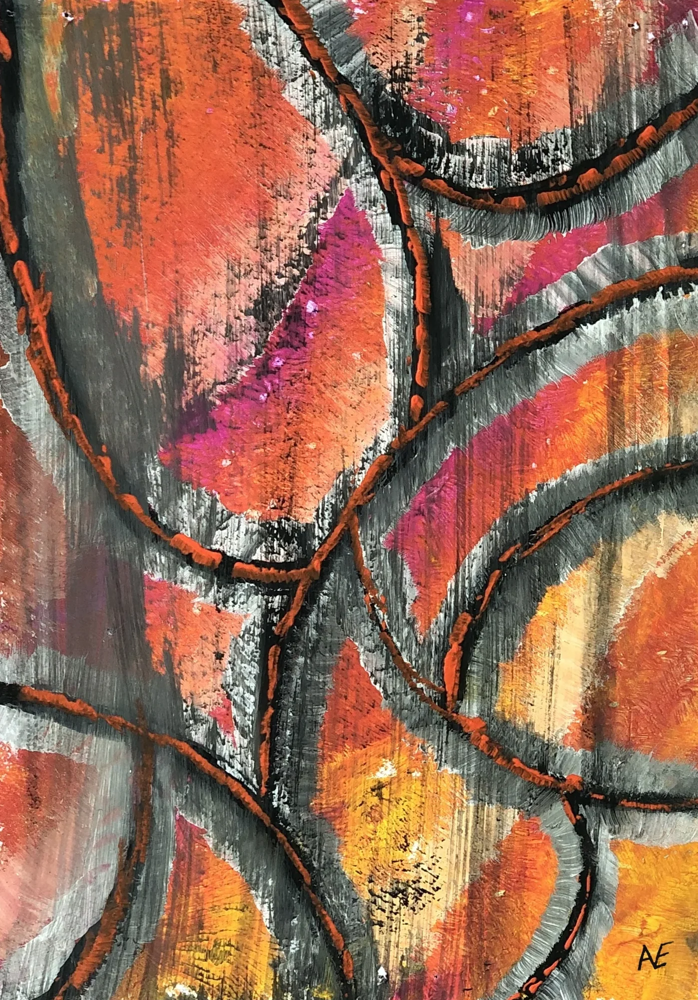
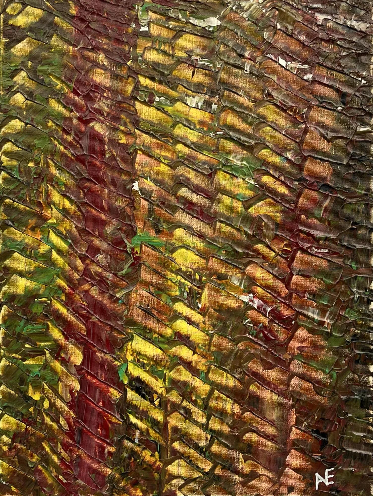
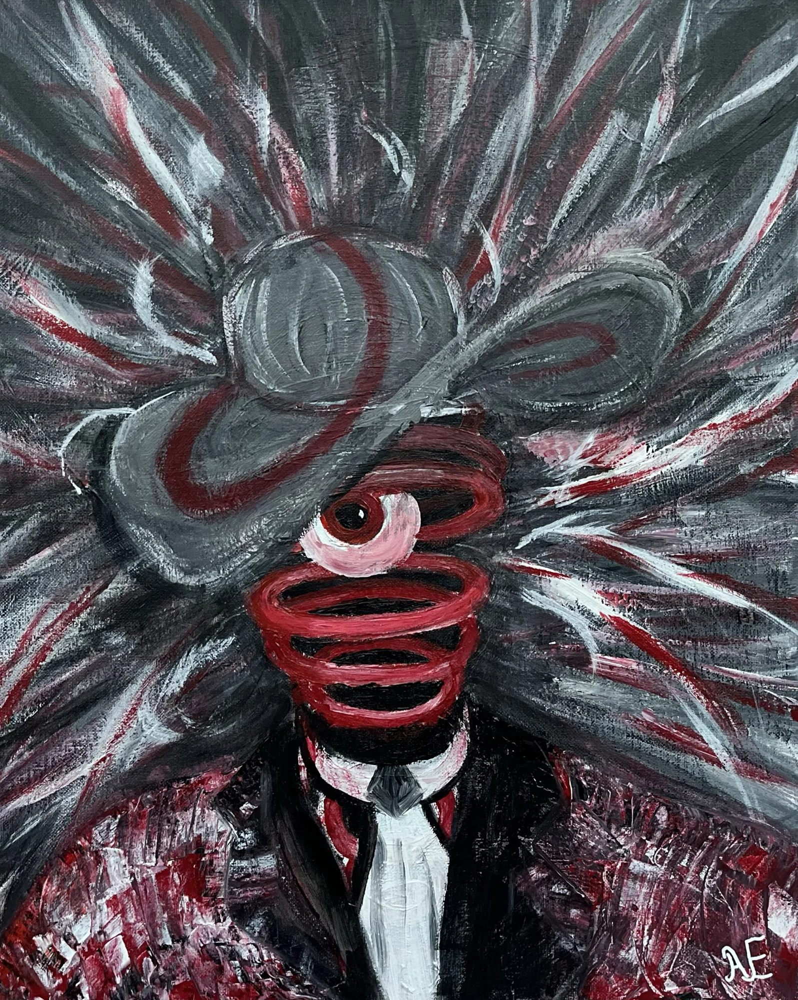
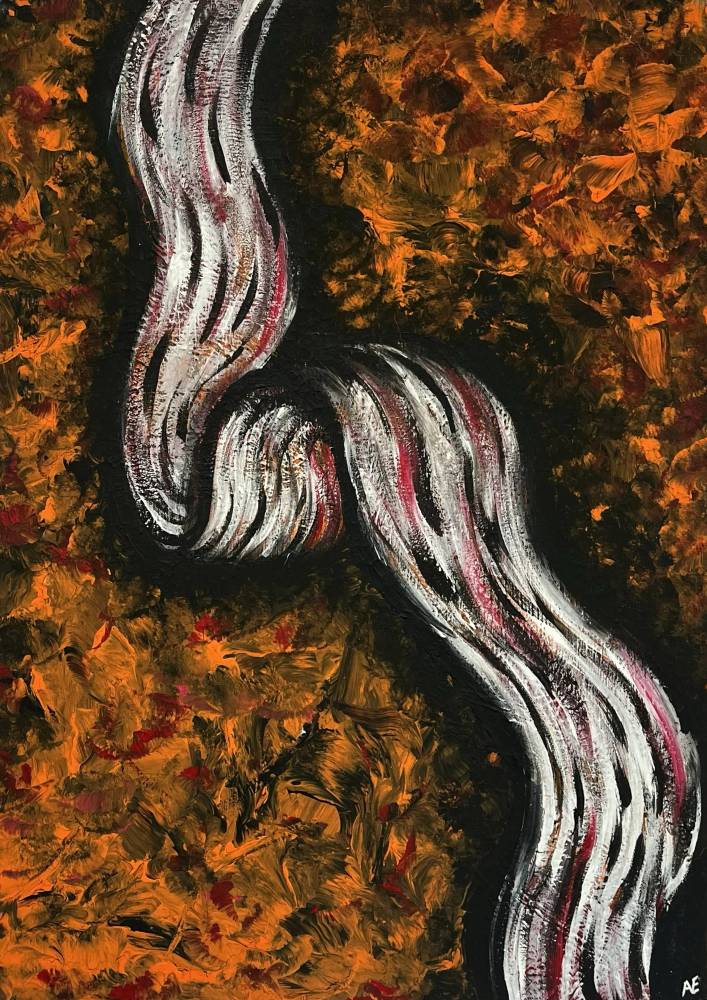
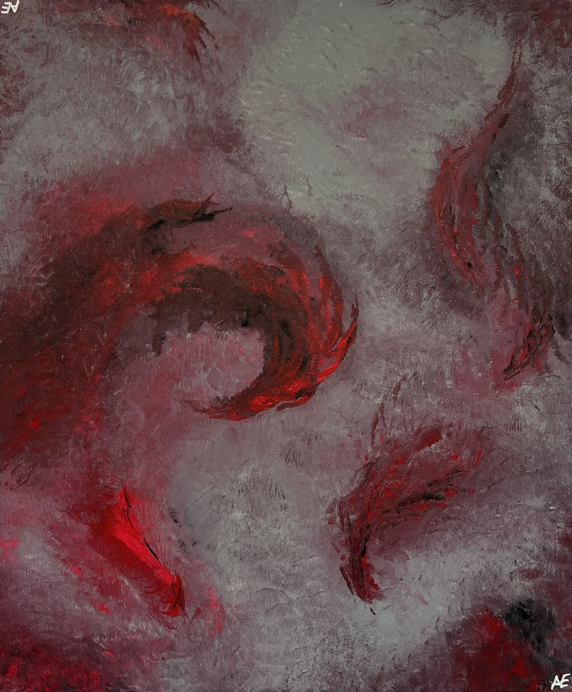
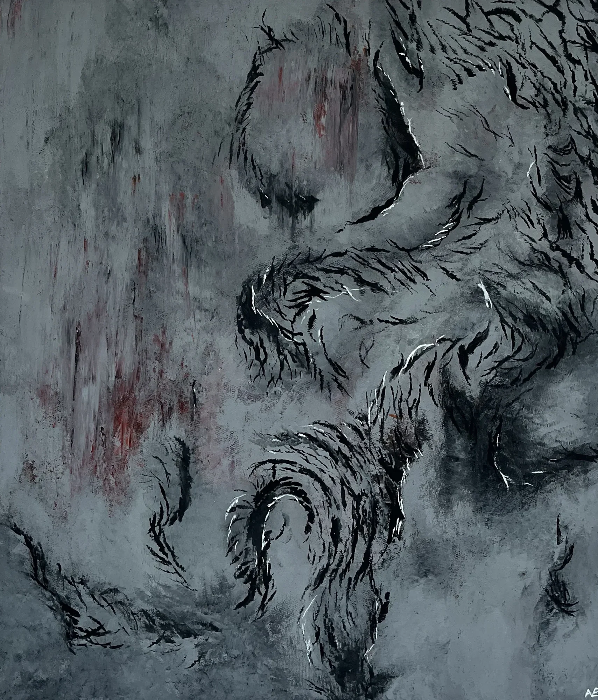
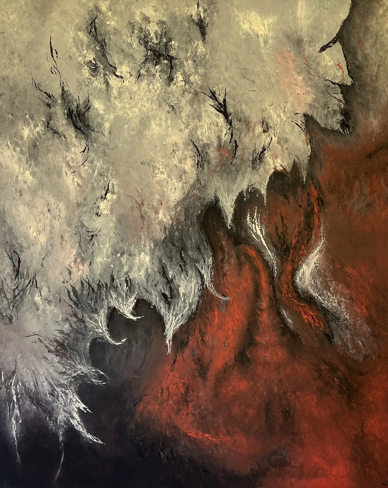

About
A Collection of Experiments.
Nael Abdelal paints in acrylic. Between 2023 and 2026 he made 289 paintings, each one an experiment: a test of what paint can do, and of what a painting needs in order to come alive.
The experiments started small and fast, as colour studies on A5 paper and 25 × 25 cm panels. From there the work moved, format by format, onto larger canvases, up to 80 × 100 cm. The size was never the point. It was the method: every new format asked for something the last one could not hold, and in answering it the style took shape. Spirals and colour fields turned into needles and splinters, then vortices and eyes, then serpents and currents, and finally the cracked, veined surfaces of the latest work.
What stayed constant are four ideas: flow and movement, order sliding into disorder, surfaces that seem to be alive, and entities emerging out of the canvas.
That is why the collection is shown by size rather than by date. Walking through the formats from smallest to largest is walking through the experiments in the order they built on each other.
More space, more room for breathing.Nael Abdelal, on the 60 × 70 cm canvases
Nine formats
Each outline is drawn to scale against the 80 × 100 cm canvas. Tap a format to see its works.
How the style grew
Seven chapters, each shown with one painting from that stage.

Chapter I · 2023
Beginnings
Small and fast, on A5 paper and square panels. Colour came first: spirals, waves and bursts, painted to find out what paint would do.
No. 11 · Mango

Chapter II · 2024
Sharpening
On the first canvases the marks grew edges. Strokes turned into needles and splinters.
No. 124 · Structural

Chapter III · 2024
Looking back
Vortices opened onto dark centres, and eyes appeared in the middle of them.
No. 177 · Weird Hat

Chapter IV · 2024–25
Bodies and currents
Serpents, ribbons and currents moving through the paint, and not always in peace.
No. 252 · Swirl

Chapter V · 2025–26
Living surfaces
Smoke-grey grounds cracked, furred and bled, with black veins running through them.
No. 213 · Hornicles

Chapter VI · 2026
More room to breathe
With more space the paintings slowed down: flame-like leaves, softer grounds and thorned growth.
No. 271 · Ascenzion

Chapter VII · 2026
The largest
Smoky stone, glowing orbs and black thorned veins gather everything that came before.
No. 287 · Heavy Head